Latar Belakang
virtualisasi kini menjadi pilihan menarik bagi dunia usaha dan organisasi. Selain menghemat biaya juga menghemat energi, karena merupakan cara tepat untuk memangkas biaya server. Jika sebelumnya satu mesin server khusus untuk web server, database, file server, aplikasi server, web server. Dengan virtualisasi, semua fungsi tersebut dapat dijadikan dalam satu mesin server dengan didalamnya terdapat beberapa mesin virtual. Banyak aplikasi yang digunakan untuk membuat sebuah web server, antara lain apache, nginx, IIS dan lain – lain.
Webserver
Pada webserver, kita perlu mengintall beberapa package yaitu nginx, php, serta wordpress. IP address dari Webserver adalah 192.168.58.132. Berikut langkah-langkahnya :
• Buka ubuntu server pada virtual machine, lalu masuk ke akses root
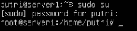
• install nginx
# apt-get install apache2
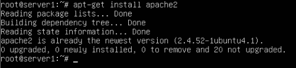
• install PHP
# apt-get install php-fpm php-curl php-mysql php-xml php-imagick php-unzip libapache2-mod-php
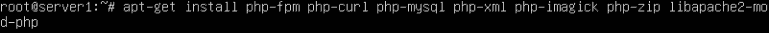
• install wordpress
# cd /var/www/html
# wget -c https://wordpress.org/latest.zip
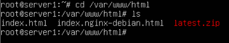
• lalu unzip file latest.zip
# unzip latest.zip -d wordpress1
# unzip latest.zip -d wordpress2
# unzip latest.zip -d wordpress3
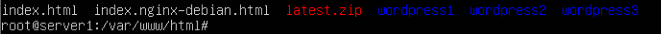
• copy file wp-config-sample.php dengan nama wp-config.php
# cp wordpress1/wp-config-sample.php wordpress1/wp-config.php
# cp wordpress2/wp-config-sample.php wordpress2/wp-config.php
# cp wordpress3/wp-config-sample.php wordpress3/wp-config.php
• buka file wp-config.php
# nano wp-config.php
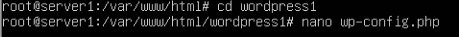
• lalu ubah parameternya sesuai dengan data yang kita buat pada wordpress1/wp-config.php :
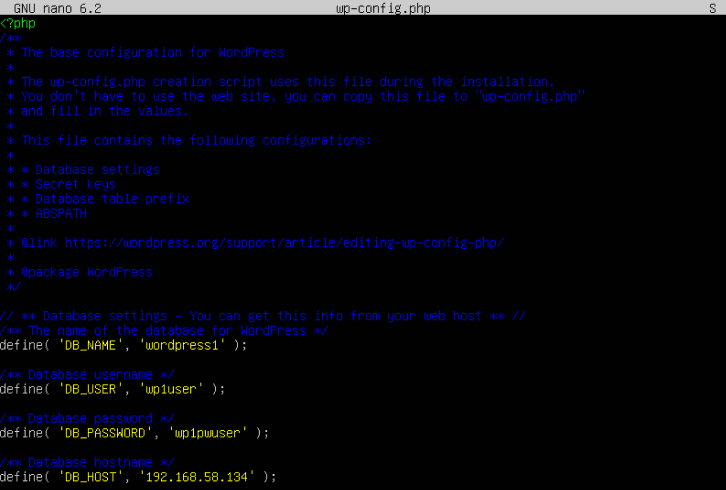
# “database_name_here” menjadi “wordpress1”
# “username_here” menjadi “wp1user”
# “password_here” menjadi “wp1pwuser”
# “localhost” menjadi ip address server 2 (database) “192.168.58.134”
pada wordpress2/wp-config.php :
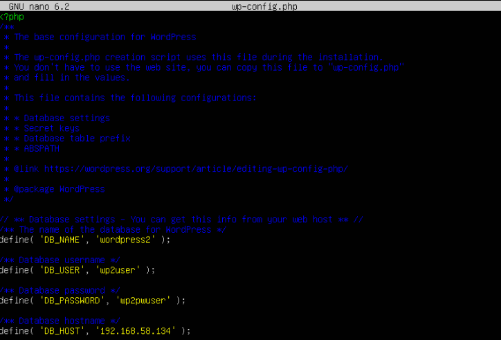
# “database_name_here” menjadi “wordpress2”
# “username_here” menjadi “wp2user”
# “password_here” menjadi “wp2pwuser”
# “localhost” menjadi ip address server 2 (database) “192.168.58.134”
pada wordpress3/wp-config.php :
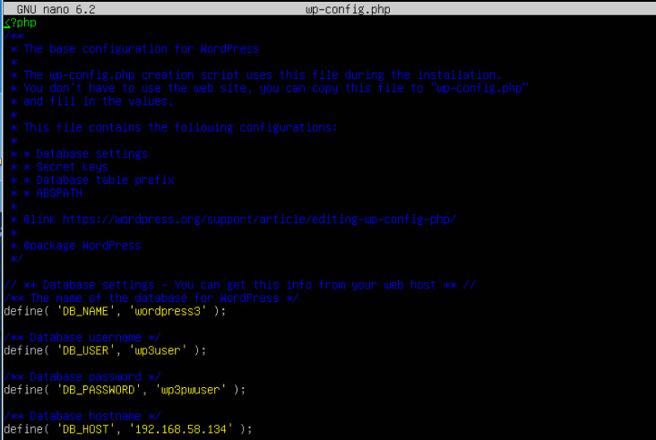
# “database_name_here” menjadi “wordpress3”
# “username_here” menjadi “wp3user”
# “password_here” menjadi “wp3pwuser”
# “localhost” menjadi ip address server 2 (database) “192.168.58.134”
Database
Pada database, kita perlu menginstall mariadb serta mengkonfigurasi mysql nya. IP address dari Database adalah 192.168.58.134. Berikut langkah-langkahnya :
• Install mariadb server dan client
# apt-get install mariadb-client mariadb-server
• Konfigurasi mysql
# mysql_secure_installation
• Membuat database mysql
# mysql -u root
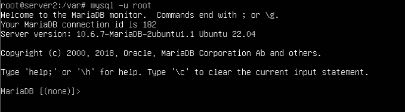
# create database wordpress1
# create database wordpress2
# create database wordpress3
# grant all on wordpress1.* to ‘wp1user’@’192.168.58.132’ identified by ‘wp1pwuser’;
# grant all on wordpress2.* to ‘wp2user’@’192.168.58.132’ identified by ‘wp2pwuser’;
# grant all on wordpress3.* to ‘wp3user’@’192.168.58.132’ identified by ‘wp3pwuser’;

• Flush privileges guna untuk mereload / membaca ulang table hak akses.
# Flush privileges
• Konfigurasi listen database, mengubah ‘127.0.0.1’ menjadi ‘0.0.0.0’ pada file 50-server.conf
# sed -i “s|127.0.0.1|0.0.0.0|g” /etc/mysql/mariadb.conf.d/50-server.conf
Kegunaan Union, Select, Wait dan --
Union
Union pada mysql digunakan untuk menggabungkan 2 tabel atau lebih ke dalam sebuah hasil. Terdapat 2 syntax union yang dapat digunakan, yaitu UNION dan UNION ALL.
# select name from moviestar union select starName from starsin;
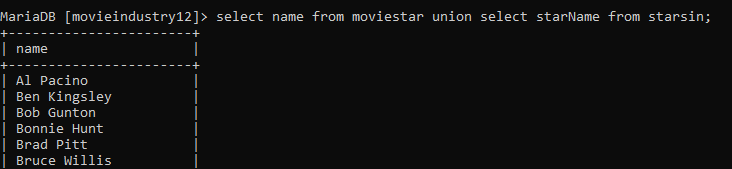
Perintah tersebut akan menampilkan data yang sama didalam kolom name dan starName. Table tersebut berisi 48 rows.
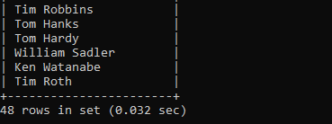
# select name from moviestar union all select starName from starsin;
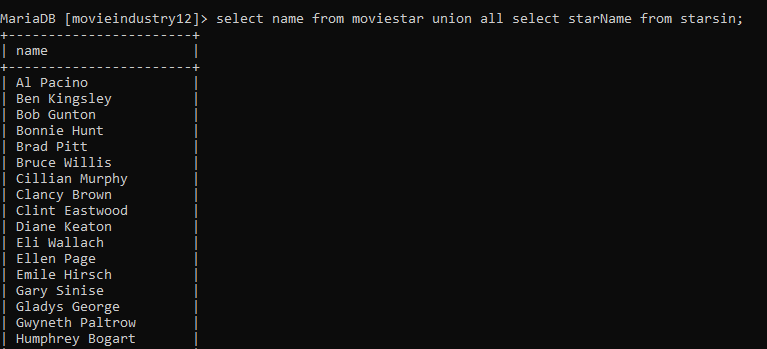
Sedangkan perintah tersebut akan menggabungkan semua data walaupun nilainya sama. Tabel tersebut berisi 103 rows.
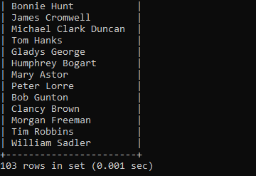
Select
Perintah select pada MySQL adalah perintah yang digunakan untuk menampilkan data dari tabel yang ada di database dan dapat juga menjadi sebuah ekspesi. Namun pada dasarnya, perintah select berfungsi untuk menampilkan data pada tabel secara keseluruhan. Berikut contoh penggunaan select pada mysql :
# select * from studio;
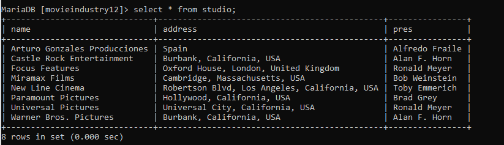
Perintah tersebut digunakan untuk menampilkan semua data yang ada di dalam table studio.
Untuk menampilkan data tertentu dari suatu table, gunakan perintah select (nama kolom) from (nama table);
# select name, pres from studio;
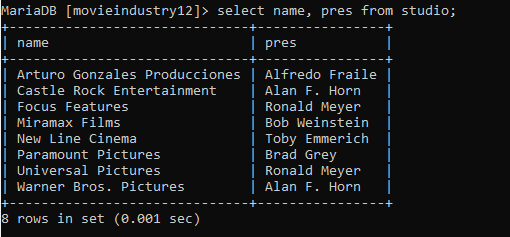
Wait (Sleep)
Sleep pada mysql membantu untuk menguji query asinkron serta query yang berjalan lambat. Terdapat 2 opsi, yaitu SLEEP dan DO SLEEP.
# select name, sleep(2) from studio;
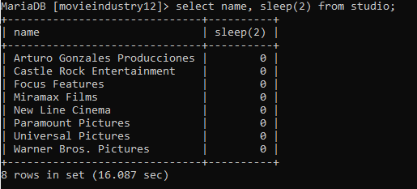
Dari SQL di atas, sleep() mengambil angka 10 sebagai parameter. Angka ini menentukan jumlah detik yang akan ditempati di utas server.
# do sleep(2)
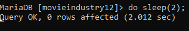
Fungsi do sleep() tidak akan menampilkan hasil apapun. Ia akan menunggu beberapa detik sesuai dengan parameter yang diinput, setelah itu ia tidak akan menampilkan hasil apapun seperti gambar diatas.
Hak Akses
Pada Mysql kita dapat mengatur hak akses sampai tingkat kolom pada tiap user. Semua pengaturan hak akses (privileges) tersimpan di database Mysql yang secara default sudah ada di sistem Mysql.
Ada banyak perintah hak akses, contohnya all, create, delete, drop, insert, select, update dan lain-lain. Untuk menambahkan hak akses, kita dapat menambahkan perintah grant.
# grant all on wordpress1.* to ‘wp1user’@’192.168.58.132’ identified by ‘wp1pwuser’;
Grant all berfungsi untuk memberikan semua hak akses kepada sebuah user. Kita juga bisa membuat hak akses tertentu saja pada user.
# grant insert on putri.mahasiswa_baru to ‘insertuser’@’192.168.58.132’ identified by ‘putri’;
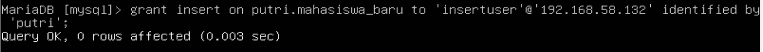
Perintah ini berfungsi untuk memberikan hak akses insert kepada insertuser dengan host 192.168.58.132 pada database putri, tabel mahasiswa_baru.